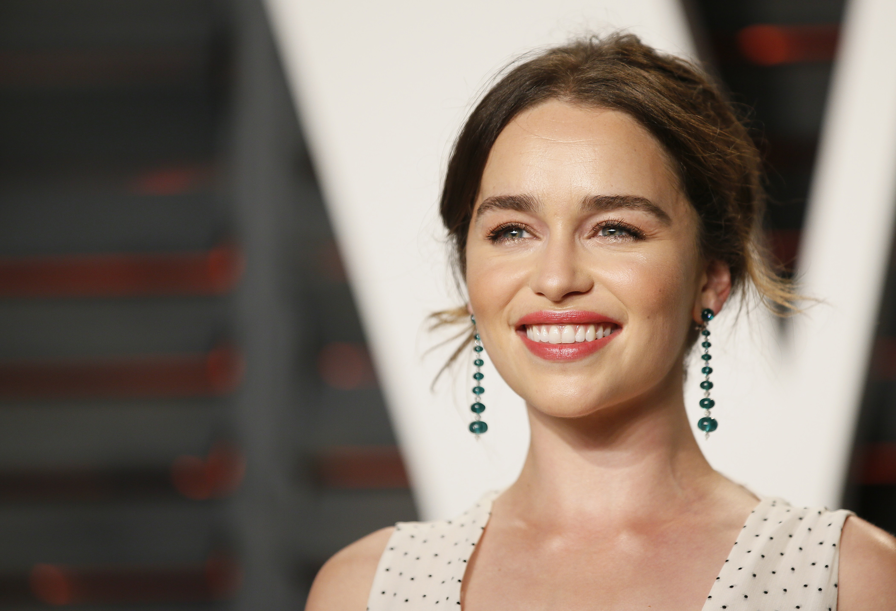
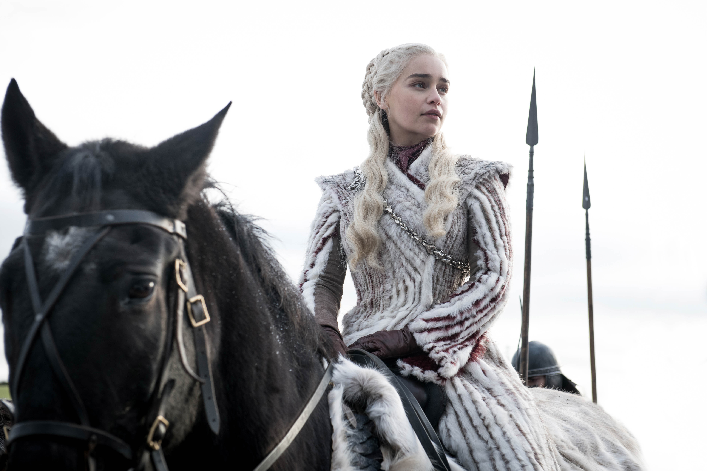
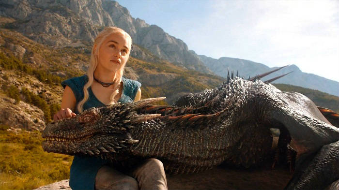
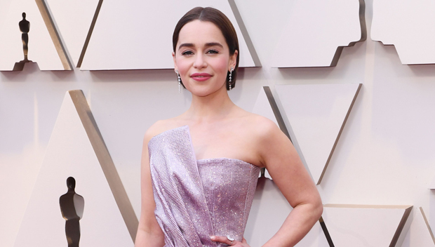

Emilia Isobel Euphemia Rose Clarke, nasceu em Londres em 23 de outubro de 1986. É uma atriz britânica, conhecida mundialmente por interpretar a Rainha Daenerys Targaryen na série de televisão Game of Thrones, da HBO. Clarke estudou na Drama Center London e apareceu em várias produções no teatro. Sua estréia na televisão veio com sua aparição em um episódio de Doctors, uma novela britânica.
Emilia nasceu em Londres, Inglaterra e cresceu em Berkshire. O seu pai, Peter Roderick Clarke, era sonoplasta de teatro, a sua mãe, Jennifer Clarke é empresária e o seu irmão mais velho, Thomas Bennett Clarke, estudou cinema e atualmente trabalha no departamento de câmeras. O interesse de Emilia em atuar começou quando tinha três anos, depois de ter visto o musical Show Boat, onde o seu pai trabalhava. Estudou na St Edward's School, em Oxford, entre 2000 e 2005, e na Rye St Antony School, entre 2005 e 2007, antes de estudar na Drama Centre London, onde se formou em 2009.
Os seus primeiros trabalhos incluem duas peças na St. Edwards School, dez
peças na Drama Centre London, atuação em Sense (produção de 2009 da Company of Angels), e um comercial de
2009 para os Samaritans. As suas primeiras atuações na televisão foram num episódio de 2009 da série
Doctors, no papel de Saskia Mayer, e no filme Triassic Attack, de 2010, da Syfy, no papel de Savannah.
Em 2010, a revista Screen International noemou-a como uma das "UK Stars of Tomorrow".
A grande mudança na sua carreira aconteceu quando foi escolhida para o papel
de Daenerys Targaryen na série Game of Thrones da HBO, baseada na série de livros As Crônicas de
Gelo e Fogo, de George R. R. Martin. Ela foi escolhida devido à retirada da compatriota Tamzin Merchant,
que saiu por motivos desconhecidos. A série estreou em abril de 2011, com críticas positivas, o que imediatamente
levou à renovação da série por mais um ano. Clarke foi indicada ao Prêmio Emmy de 2013 na categoria de melhor
atriz coadjuvante de drama por sua atuação no papel de Daenerys.
Em 2015, Emilia Clarke conquistou o nono lugar da lista das 100 mulheres mais
sexy do mundo, divulgada pela revista masculina FHM. Em 2014, Emilia tinha ficado em 11º lugar no ranking.
Curiosidade: Em 2012 mais de 150 meninas foram registradas com o nome de sua personagem na série
Game of Thrones. Em 2015, Emilia foi indicada novamente ao Prêmio Emmy na categoria de melhor atriz
coadjuvante de drama. Clarke também atuou na adaptação cinematográfica do romance best-seller de Jojo Moyes,
"Como eu era antes de você", no papel de Lou, lançado em 2016.
Em março de 2013, foi relatado que ela e Seth MacFarlane tinham terminado seu
relacionamento. Clarke atualmente reside em Hampstead, em Londres. Entre outubro de 2018 e fevereiro de 2019,
Clarke se relacionou com Charlie McDowell.
Emilia Clarke revelou recentemente que identificou dois aneurismas durante
os oito anos de gravações de Game of Thrones. O primeiro rompeu, gerando um AVC (acidente vascular cerebral),
pouco tempo depois das primeiras filmagens, em fevereiro de 2011. Ela estava fazendo exercícios quando sentiu
uma forte dor de cabeça e pediu ao treinador que parasse a atividade. Tentei ignorar a dor e acabar o
treino, mas não consegui. Disse ao meu treinador que tinha que fazer uma pausa. De alguma forma, quase me
arrastando, cheguei até o vestiário. Alcancei a privada, ajoelhei e vomitei violenta e volumosamente
,
disse Clarke.
Com o fim da série Game of Thrones, Emilia Clarke declarou:
Encontrar as palavras para escrever este post me deixou sobrecarregada com o quanto eu quero dizer, mas nada será suficiente para descrever o que esta série e Dany significaram para mim. A mãe dos dragões tomou conta de toda a minha vida adulta. Essa mulher tem todo o meu coração. Suei no fogo do dragão, derramei muitas lágrimas para aqueles que deixaram cedo a nossa família, e forcei meu cérebro para tentar fazer justiça Khaleesi e suas palavras, ações (e nomes) magistrais. Game of Thrones me moldou como mulher, como atriz e como ser humano. Eu só queria que meu querido pai estivesse aqui agora para ver até onde voamos. Mas para vocês, queridos e mágicos fãs, eu lhes devo tanta gratidão, pelo seu olhar firme sobre o que fizemos e o que fiz com um personagem que já estava nos corações de muitos antes mesmo de eu usar a peruca platinada dos sonhos. Sem você não há nós. E agora nosso relógio parou.



